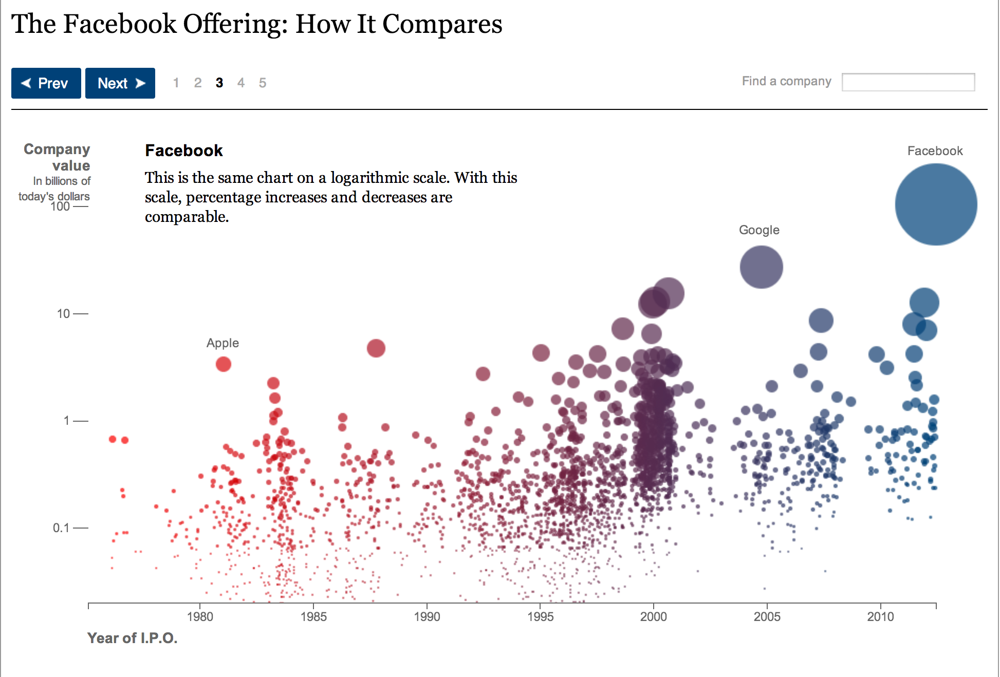
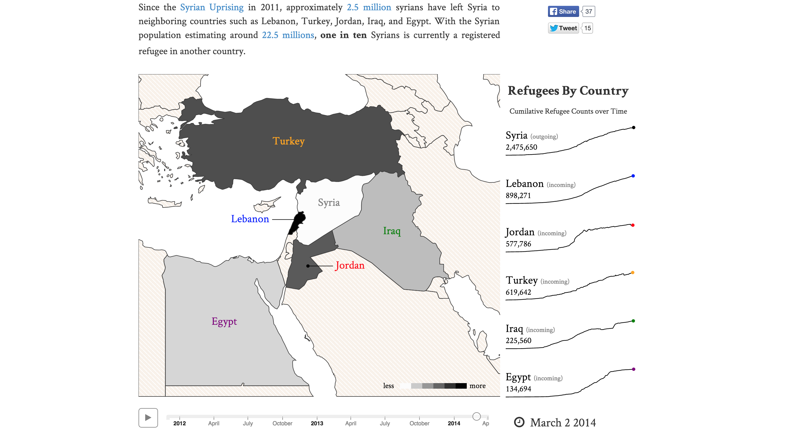
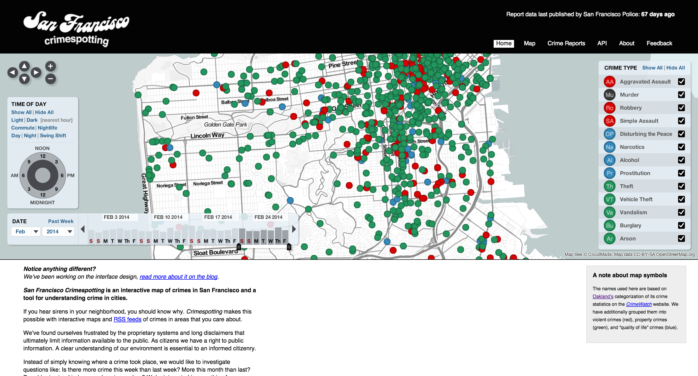
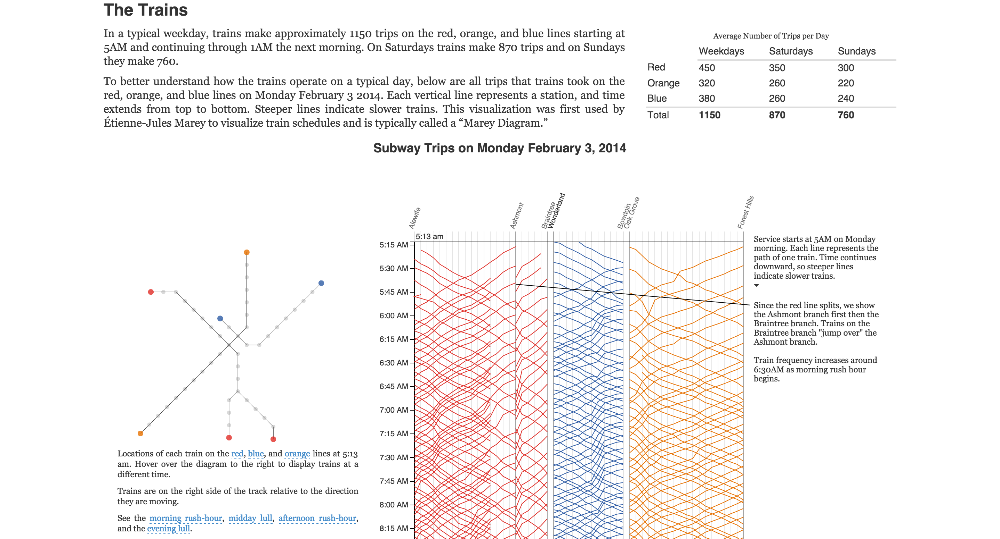
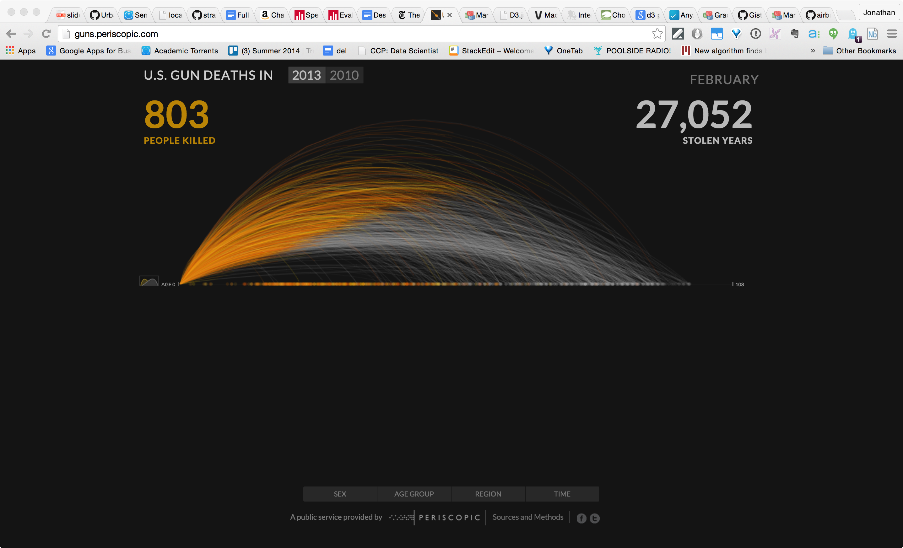
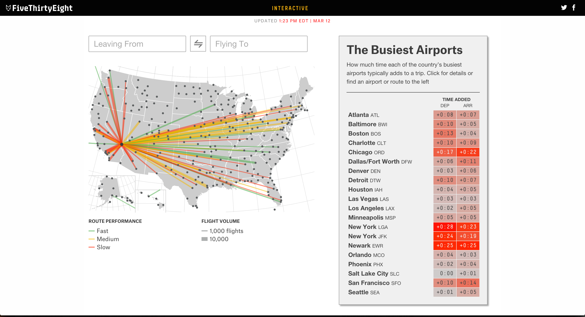

Hands on D3!
These are the materials for my workshop on creating interactive data visualization with D3!
I would love your feedback on the materials in the Github issues.
And please do not hesitate to reach out to me directly via email at jondinu@gmail.com or over twitter @clearspandex
Throughout this workshop, you will learn how to make this interactive parallel coordinate plot of environmental conditions related to incidences of Asthma in SF.
Getting Setup
You will need:
- HTTP web server
- On OSX and Linux
python -m SimpleHTTPServer - On Windows, I recommend downloading Mongoose
- On OSX and Linux
- Text Editor: I recommend Sublime Text
- A (modern) Web Browser: I recommend Google Chrome
Once you have downloaded the software above, you are ready to start making some data visualizations!

- Get the files: Download the ZIP or
git clone https://github.com/Jay-Oh-eN/hands-on-d3.git(git tutorial) this repository. - Start you HTTP web server
- If using a
SimpleHTTPServer, navigate into the repository folder (hands-on-d3) on your machine before you start the server. - If using Mongoose, set the 'Shared Directory' to be the repository folder.
- If using a
- Navigate with a web browser to
http://localhost:[port]where [port] is the port the server has started on (SimpleHTTPServerdefaults to port 8000) - You should see the directory listing, click on any of the
.htmlfiles and you should see the charts.
If you need some help with Javascript or D3, refer to the tutorials below
Libraries Used
The Data
The data is from the city of SF about certain environmental and health conditions of given Census tracts in the City. You can read more about the individual fields from the data dictionary.
This comprehensive dataset was used to inform and calculate the Heat Vulnerability Index for our Climate and Health Program. The dataset includes satellite imagery from NASA, temperature data from NOAA and other data sets such as individual physiology, culture, local infrastructure, behavior, and social and demographic characteristics which influence the risk of heat-related health impacts.
There 21 fields in the file (comma separated with headers) but we will be focusing on the following 8 fields:
| AsthmaRates | AirQuality | SurfaceTemperature0908 | NonWhite | Income | NoHighSchoolDegree | PopulationDensity | TreeDensity | |
|---|---|---|---|---|---|---|---|---|
| 0 | 6.299994 | 2.2 | 322 | 0.230650 | 93777 | 0.013605 | 1985.746482 | 1185 |
| 1 | 6.276086 | 2.2 | 316 | 0.398085 | 73540 | 0.130243 | 27208.307880 | 6133 |
| 2 | 5.700004 | 2.1 | 313 | 0.124894 | 171257 | 0.024085 | 7245.100198 | 2989 |
| 3 | 5.699994 | 2.2 | 314 | 0.104333 | 187377 | 0.014402 | 41077.512777 | 5047 |
| 4 | 5.699984 | 2.2 | 312 | 0.175050 | 117254 | 0.040223 | 21792.728792 | 3155 |
| ... | ... | ... | ... | ... | ... | ... | ... | ... |
Visualization Examples
Author Driven
Facebook IPO (NYT)

Syrian Refugee Crisis (Wesam Manassra)

Viewer Driven
Crimespotting (Stamen)

Martini Glass (mix of author and viewer)
Visualizing MBTA Data (Mike Barry and Brian Card)

Gun Deaths (Periscopic)

Flight Delays (538)

Next Steps
- Visual Storytelling with D3 (Ritchie King)
- Data Visualization and D3.js (Udacity)
- Interactive Data Vizualization (Scott Murray)
- CSE512: Data Visualization (University of Washington)
- D3 Meetups
Resources
General
Javascript
- JS for Cats (beginner)
- Code School interactive
- Eloquent Javascript (more advanced)
- Superhero.js (set of resources)
D3
- Let's Make a Bar Chart
- How Selections Work
- Thinking with Joins
- General Update Pattern
- Working with Transitions
- Gallery of D3 example
- Dashing D3
- D3 Noob
- D3 Show Reel
- D3 master list of tutorials
- bl.ocksplorer
- Towards Reusable Charts
D3 Libraries
- RAW (GUI)
- D3plus (charting)
- Rickshaw (timeseries)
- dc.js (multidimensional)
- NVD3 (charting)
- c3.js (charting)
- Queue.js (multiple data files)
License
Copyright 2015 Jonathan Dinu.
All files and content licensed under Creative Commons Attribution-NonCommercial-ShareAlike 4.0 International Public License
Rights of examples and screenshots of data visualizations belong to the authors themselves.